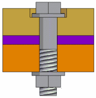

Fastener System command
The Fastener System command  places fasteners, such as bolts, washers, and nuts into an assembly. The fastener
diameter and orientation is determined by the elements you select in the Top Hole and Bottom Hole steps. You can then select the hardware you want from your database of fasteners
using the Fastener Systems dialog box.
places fasteners, such as bolts, washers, and nuts into an assembly. The fastener
diameter and orientation is determined by the elements you select in the Top Hole and Bottom Hole steps. You can then select the hardware you want from your database of fasteners
using the Fastener Systems dialog box.
The Fastener Systems command requires a connection to the Standard Parts database.

Defining the standard parts database location
Before you can use the Fastener Systems command, you must define the location of the Standard Parts database using the Solid Edge Options command on the File menu. The File Locations tab on the Options dialog box defines the database location.
Determining fastener size and bolt placement direction
The elements you select in the Select Top Hole and Select Bottom Hole steps, along with the fasteners stored in your database, determine the fastener sizes that are displayed in the Fastener Systems dialog box. Fasteners which are too large to fit into the hole are not displayed in the dialog box.
In some cases, the elements you select in the Select Top Hole and Select Bottom Hole steps can result in no appropriate fasteners being found in the database. When this occurs, a message is displayed to inform you that the fastener query was unsuccessful.
The elements you select in the Top Hole step determine the direction that the bolt is placed into the assembly. The head of the bolt is oriented on the same side of the part as the circular element you select in the Top Hole step.
Defining the fastener standard
The Standard list in the Fastener Systems dialog box filters the displayed fasteners according to internationally recognized standards, such as ANSI, DIN, JIS, and so forth. When you change the active Standard, you should click the Update button to rerun the database query.
Specifying the fasteners
After you define the standard, you can finish defining the fasteners you want to use. You can use the Selection Type settings to specify the fastener you want to place in the assembly. Once selected, the selection filter displays information for bolts and screws that match the attributes for the selected hole. After selecting a component, you can use the Add Fastener button to add the fastener component to the Selected bolt, Top stack, or Bottom stack list.
Specifying bolt length
The bolt length can be defined using one of three methods:
-
Minimum bolt extension
-
Minimum engagement length
-
User-defined length
The Minimum extension option is displayed when placing a bolt in a through hole that is threaded or non-threaded.
When you set the Minimum extension option and the design changes such that the bolt length is no longer valid, the bolt used is updated automatically.
When you set the User-defined length option, and the design changes such that the bolt length is no longer valid, you must update the User-defined length manually to change the bolt that is selected.
Saving the fasteners
You can save fasteners to a specified location with the Copy to working folder option. To enable the option, click the check box next to the option
Fasteners and PathFinder
When you place fasteners in an assembly using the Fastener Systems command, a fastener feature is added to PathFinder. If the design changes such that the fastener length is no longer appropriate, the symbol in PathFinder changes and the Error Assistant command is activated. You can use the Update command on the PathFinder shortcut menu to update the fastener feature or you can click the fastener entry in PathFinder, and then use the Edit Definition button on the Select tool command bar to redefine the fastener characteristics.
Fasteners and alternate assemblies
You can define fasteners in a family of assemblies. You can define fasteners on a per member basis by clearing the Apply Edits to All Members option. The fastener is then automatically excluded from the other family members.
For more information, see the Alternate Assemblies Impact on Solid Edge Functionality Help topic.
How do I
Place fasteners in an assemblyLook up more details
Fastener System command barFastener System dialog box